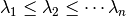
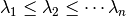
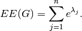

estrada_index¶
- estrada_index(G)¶
Return the Estrada index of a the graph G.
Parameters : G: graph :
Returns : estrada index: float :
Raises : NetworkXError :
If the graph is not undirected and simple.
See also
estrada_index_exp
Notes
Let
 be a simple undirected graph with
be a simple undirected graph with  nodes and let

be a non-increasing ordering of the eigenvalues of its adjacency
matrix
nodes and let

be a non-increasing ordering of the eigenvalues of its adjacency
matrix  . The Estrada index is
. The Estrada index is
References
[R174] E. Estrada, Characterization of 3D molecular structure, Chem. Phys. Lett. 319, 713 (2000). Examples
>>> G=nx.Graph([(0,1),(1,2),(1,5),(5,4),(2,4),(2,3),(4,3),(3,6)]) >>> ei=nx.estrada_index(G)